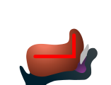
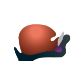

OPENING SOUNDS
For the secondary consonants, their letters outline the tongue shapes when making their sounds, i.e., [n], [l], and [ŋ]. By parts or modification of a square, ㄴ, ㄹ, and ㆁ characterize the erected tip, bent body, and raised back of the tongue, respectively (FIG. 1). Their opening and closing articulations are the same as ㅁ. In particular, ㄴ and ㆁ are nasal sounds that have similar phonological properties with ㅁ as they are graphically close. Notably, ㄹ exaggerates the bent curve with more strokes to distinguish it from the others.
| (a) ㄴ | Letter Formation |
|---|---|
|

|
|

|
|
| (b) ㄹ | (c) ㆁ |
CLOSING SOUNDS
Reverse articulation of an opening basic sound defines its closing sound whose letter reuses the opening letter (FIG. 2). For example, the closing tongue tip that articulates from FIG. 2a to the reference state produces its nasal sound, i.e., the closing [n], by escaping air through nasal tract. The lateral side of the tongue can close the oral tract that produces its closing sound [l] (FIG. 2b). The closing tongue back that articulates from FIG. 2c to the reference state produces its nasal sound, i.e., the closing [ŋ], by escaping air through nasal tract.
| (a) ᆫ | Letter Formation |
|---|---|
|
|
|
| (b) ᆯ | (c) ᇰ |
Basic Open Syllables
All combinations of three primitive opening and lasting sounds populate the basic open syllables.
| ㄴ | ㄹ | ㆁ |
Open. Last. |
|---|---|---|---|
| | | | ㆍ |
| 니 | 리 | | ㅣ |
| 느 | 르 | | ㅡ |
|  | |
| Speech Production | Letter Formation |
|---|
Basic Closed Syllables
All combinations of three primitive lasting and closing sounds populate the basic closed syllables.
| ㆍ | ㅡ | ㅣ |
Last. Clos. |
|---|---|---|---|
| | 은 | 인 | ᆫ |
| | 을 | 일 | ᆯ |
| | | | ᇰ |
| Speech Production | Letter Formation |
|---|
Closed Syllables by ㄴ
All combinations of three primitive vowels and basic consonants populate the basic syllables.
| ㄴ | ㄹ | ㆁ |
Open. Rhym. |
|---|---|---|---|
| | | | |
| 닌 | 린 | | 인 |
| 는 | 른 | | 은 |
| Speech Production | Letter Formation |
|---|
Closed Syllables by ㄹ
All combinations of three primitive vowels and basic consonants populate the basic syllables.
| ㄴ | ㄹ | ㆁ |
Open. Rhym. |
|---|---|---|---|
| | | | |
| 닐 | 릴 | | 일 |
| 늘 | 를 | | 을 |
| Speech Production | Letter Formation |
|---|
Closed Syllables by ㆁ
All combinations of three primitive vowels and basic consonants populate the basic syllables.
| ㄴ | ㄹ | ㆁ |
Open. Rhym. |
|---|---|---|---|
| | | ᅌᆞᇰ | |
| | | | |
| | | | |
| Speech Production | Letter Formation |
|---|
Consonant Names
The basic consonant names include their opening and closing sounds.
| Basic Consonants | ㄴ | ㄹ | ㆁ |
|---|---|---|---|
| Consonant Names | 느은 | 르을 | |
| Short Names | 는 | 를 | |
Notes on ㆁ*
Remarkably, ❘ solves the missing puzzles in ㅣ, ㅇ, and ㆁ, where ㆁ is the old letter whose only closing sound is known as [ŋ]. Both sides of the raised tongue back can produce the opening ❘, lasting ㅣ, and closing ❘ that have graphic similarities. The opening sound of ❘ is close to that of ㅇ in its articulatory neighbour. The closing sounds of ❘ and ㆁ are assumed to be the same, and so are their opening sounds. Originally, ㆁ might attach ㅇ below ❘ to graphically distinguish ❘ from ㅣ and to consider the phonetic similarity of ❘ and ㅇ in the pictographic principle. As the opening ㆁ became ㅇ or obsolete in the Korean orthography, ㅇ void of the closing sound replaced ㆁ by their phonetic and graphic similarities.